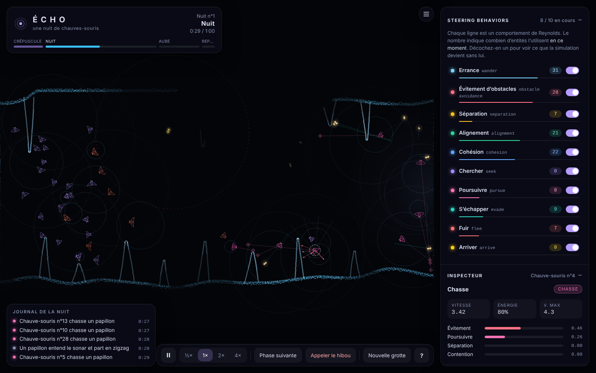
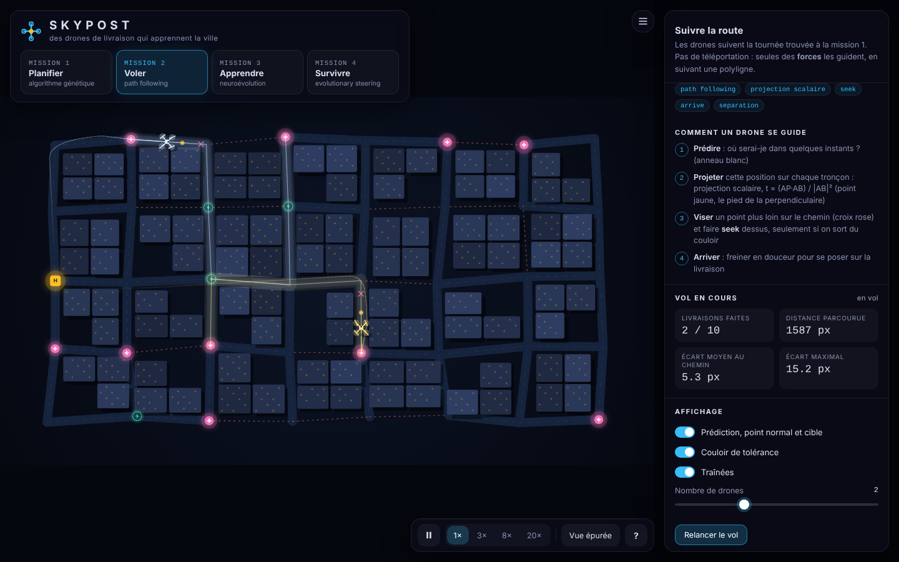

STEERING BEHAVIORS
Deux simulations, quatorze comportements, aucune téléportation : tout est piloté par des forces, comme Craig Reynolds l'a imaginé.

Projet 1
ÉCHO
Une nuit de chauves-souris dans une grotte noire. On ne voit que ce que leur sonar révèle.
Entrer dans la grotte
Projet 2
SKYPOST
Des drones de livraison médicale qui planifient, volent, apprennent et survivent.
Décoller